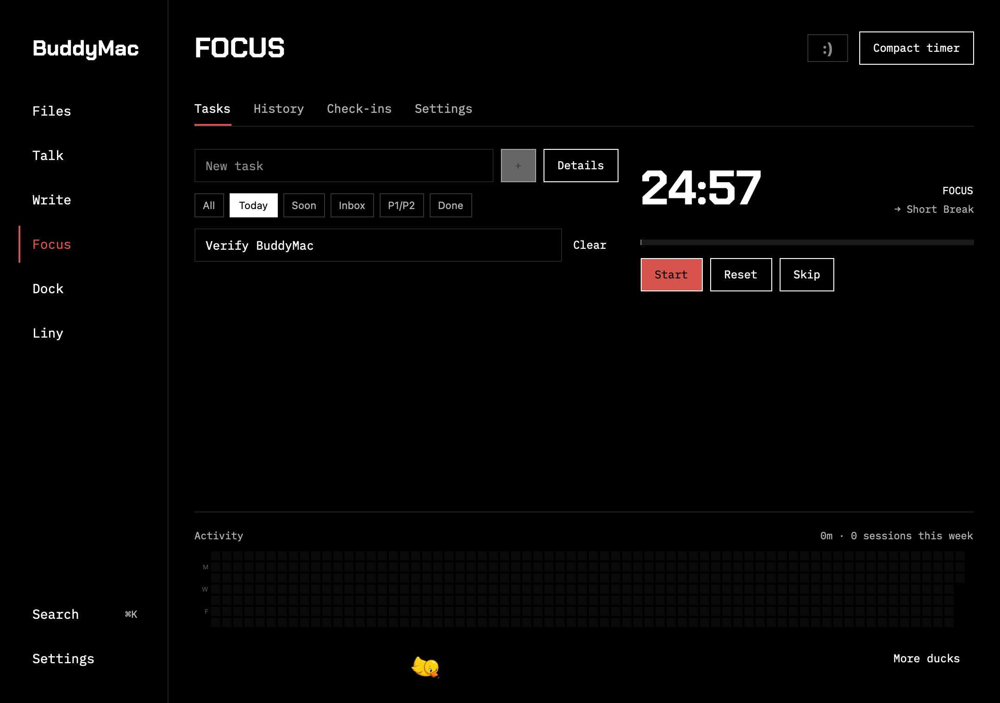

BuddyMac
Files, dictation, writing, focus,
icons and an AI assistant.
One app on your Mac.
macOS 26+ · Apple Silicon

Install & set up
Install BuddyMac from your terminal with npx. The full repository is public on GitHub.
Install or update with npx
npx buddymac@latestRequires Node.js 20+. Run the same command to install or update BuddyMac in ~/Applications. Quit BuddyMac when prompted. Your settings stay saved.
Prefer a direct download? Get the app from GitHub releases. The app is signed and notarized by Apple. The installer verifies it before opening.
Connect your AI provider
In Talk → Settings, choose Set API key and add your OpenRouter key. Write uses the same key.
For Liny, open Liny → Settings, choose a provider and press Connect. Files, Focus and Dock need no AI account. AI requests use your provider account and may incur charges.
Allow what you use
Open Settings → Permissions. Allow Microphone for dictation and Accessibility to insert or rewrite text in other apps.
Enable shortcuts in Talk only after turning off overlapping shortcuts in your original apps.
Use BuddyMac
Press ⌘ K in the app to find a tool or action.
Files
Keep files ready to drag into any app.
- Drop files onto the shelf, or choose Add files or Paste files.
- Search and select files, then drag them into another app. You can also Open, Copy or Show in Finder.
- In Files → Settings, choose a normal window or a shelf on the left or right screen edge.
Pin the shelf to keep it open. Remove clears an item from the shelf; it does not delete the original file.
Talk
Speak, transcribe and edit with your voice.
- Open Talk → Record. Press Record, speak, then Stop and transcribe. Import audio transcribes an existing recording.
- Copy the result, or enable Paste into the active app in Settings. Use a dictation shortcut to record while working in another app.
- Set shortcuts for dictation, voice editing and spoken notes in Shortcuts. Use the compact recorder or enable the dictation pill in Settings.
- Dictionary & snippets
- Add names and specialist words to Dictionary. Use Snippets for phrases you say often.
- Style & cleanup
- Choose writing styles per app. Settings controls language, cleanup, memory and optional screen context. Save your changes.
- History & retry
- Search, copy or delete past transcripts in History. Retry a failed transcription, or cancel a recording you don't need.
Audio goes to OpenRouter. Optional S1-mini cleanup runs English text locally; it does not make transcription offline. Screen context sends an active-window screenshot when enabled.
Write
Rewrite selected text with your own instructions.
- Paste text into Rewrite, choose a profile and press Rewrite. Edit or copy the result, or use it as the next input.
- In Profiles, create a rewrite instruction or choose a template. Assign a shortcut and enable it.
- Select text in another app and press that profile's shortcut to rewrite it in place.
Notes holds saved notes and lets you assign note shortcuts. Profiles can be edited, reordered or disabled. Choose the default writing model and enable profile and note shortcuts in Settings.
Focus
Plan a task. Start a timer. Take a break.
- Add tasks in Tasks. Set a project, priority, due date and tags; search or filter to choose what to work on.
- Start the timer. Pause, reset or skip a phase as needed. Settings controls work time, breaks and automatic transitions.
- Open History for completed sessions and activity. Use Check-ins to record your mood and a note about your day.
Compact timer floats above your work. Enable the notch panel or menu-bar timer in Settings. To share tasks, sessions and check-ins with NotchFlow, choose Share with NotchFlow. iCloud sync requires an iCloud-enabled build and the same iCloud account.
Dock
Give your apps the icons you want.
- Choose pack to open an existing BuddyDock manifest, or open New pack, name it and choose PNG or JPEG artwork for each app.
- In Icons, select the apps to change and press Apply selected. Reopen an app if its old icon is still showing.
- Choose Keep selected applied to repair icons after updates while BuddyMac runs.
Restore original icons undoes selected changes. Stop automatic repair in Settings. Use square artwork, ideally 1024 × 1024 pixels. Apps with their own icon settings must be configured there.
Liny
Chat with an assistant that can use tools.
- In Settings, connect Codex with your ChatGPT account, or use your own OpenRouter or Z.AI key. Choose the model and press Use this model.
- Open Chat, write your request and send it. Attach an image when useful; start a New chat for a separate task.
- Resume conversations from History and manage saved context in Memory.
Settings lets you import an existing profile, set an edge sidebar and record shortcuts for opening Liny or capturing a screen region. Computer actions depend on macOS permissions; some screen-capture and computer-control workflows remain limited in this build.
Keep it within reach
Turn on Start at login in Settings → General if you want BuddyMac available when you sign in. Closing its window keeps it running in the menu bar. Choose Quit there to stop it.
Your original apps stay installed. Settings → Original apps manages the switch to BuddyMac. Review those choices before disabling the utilities you already use.